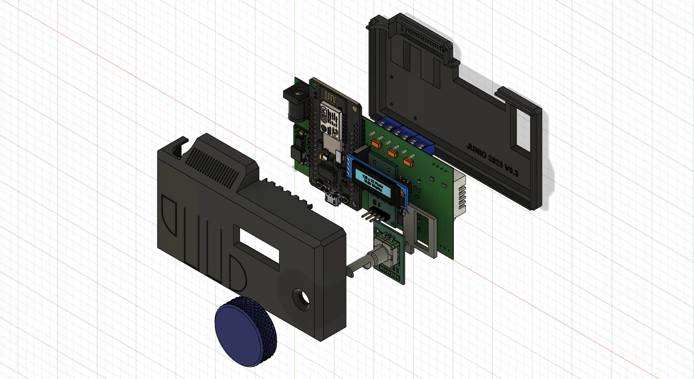

// EXPLORACIÓN Y PRODUCTO
Enclosure 3D | Control de ambiente

¿Qué tan importante es una carcasa cerrada para las impresoras 3D?
Los gabinetes para impresoras 3D son cada vez más populares, especialmente para aplicaciones escolares e industriales. Una de las principales razones de esto es que ayudan a proteger los filamentos contra la degradación debida a factores ambientales como el polvo, el calor y la humedad. Además, encerrar el área de trabajo ayuda a reducir los niveles de ruido y mejorar la seguridad al evitar o controlar la extracción de gases y olores durante el funcionamiento.
Optar por una impresora 3D completamente cerrada puede tener varios beneficios:
- Seguro de usar
- Amplia gama de materiales imprimibles
- Mejor calidad de impresión
- Reducción de ruido y pérdida de calor
Enclosure 3D te protege contra los riesgos de la impresión
Todos los plásticos, cuando se extruyen a alta temperatura, sufren una contracción durante el enfriamiento que puede estar entre el 0,3 % y el 4 %. Esta retracción puede provocar deformaciones, si el enfriamiento no es suave y homogéneo, dando lugar a problemas como warping, delaminación de capas o deformaciones dimensionales de la pieza.
Para evitar estos problemas, lo ideal es que la temperatura alrededor de la pieza sea ligeramente inferior a la temperatura de transición vítrea (Tg) del material que se está imprimiendo durante todo el proceso de impresión y se debe reducir lentamente a temperatura al finalizar.

Sistema de calentamiento
Algunos fabricantes utilizan el término "calentamiento pasivo", refiriéndose a aquellos sistemas que tienden a acumular el calor generado por la plataforma de impresión.
La temperatura interna que pueden alcanzar estas impresoras varía mucho de una impresora a otra dependiendo del material del que están hechas, su volumen, la temperatura de la plataforma de impresión, la calidad del aislamiento y la temperatura de la habitación donde se encuentran. En general, las impresoras de mejor calidad son capaces de proporcionar temperaturas entre 45°C y 65°C en el mejor de los casos.
| Material | Temp. de impresión [°C] | % Contracción | Tg [°C] |
|---|---|---|---|
| PLA | 190 - 215 | 0.3 - 0.5 | 40 - 60 |
| PETG | 220 - 260 | 0.2 - 1.0 | 75 - 85 |
| Nylon | 255 - 290 | 0.7 - 3.0 | 55 - 85 |
| ABS | 220 - 240 | 0.7 - 1.6 | 90 - 100 |
| HIPS | 80 - 90 | 0.2 - 0.8 | 80 - 90 |
Repositorio
Es un proyecto Openfirmware en el cual se puede desarrollar sobre la arquitectura del ESP8266. Para saber más sobre el código puedes verlo y descargarlo desde la sección de firmware y si lo que más te gusta es diseñar, puedes proponer la próxima versión de la carcaza o personalizarla a tu propio estilo en la sección de carcasa.
Proyectos relacionados

airbit | Calidad de aire interior
Con este dispositivo podrás identificar la calidad del aire y cuándo es el momento de abrir una ventana para tomar aire fresco.
Abril 2023
Fmart | Psicoanálisis
Como en todo sistema hay un panel de control, de esta forma se puede ir viendo cómo interactúan las variables en juego.
Septiembre 2022
Fmart | Heladera Inteligente
¿Qué pasaría si tu heladera pudiera aprender tus rutinas y hábitos de consumo? ¿La llamarías inteligente?
Diciembre 2021airbit | Calidad de aire interior
// EL SIGUIENTE PASO
TU PRODUCTO.
SU PRÓXIMA ETAPA.
Una primera conversación para entender el desafío y ver si puedo aportar valor.
↗ Hablemos de tu proyecto